Destinos para visitar na região Norte:
 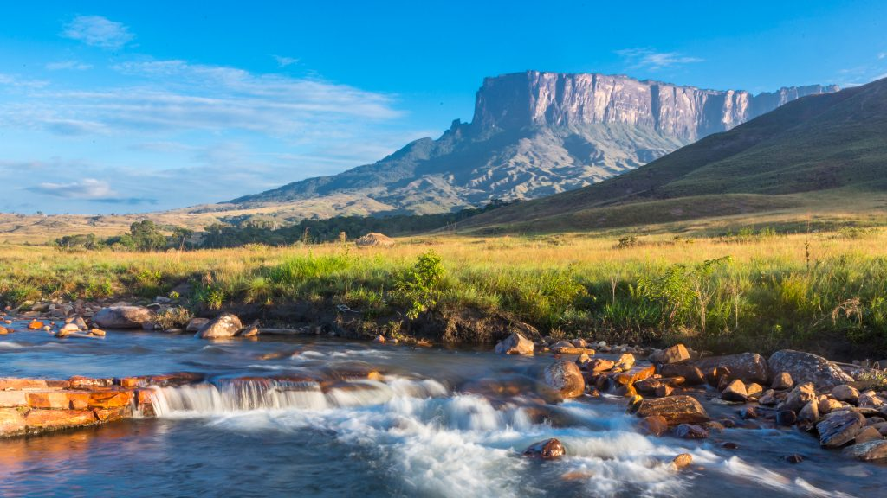
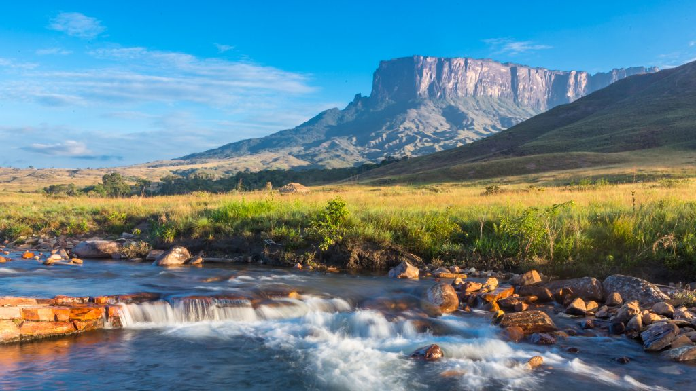


Destinos para visitar na região Nordeste:
Destinos para visitar na região Sudeste:
 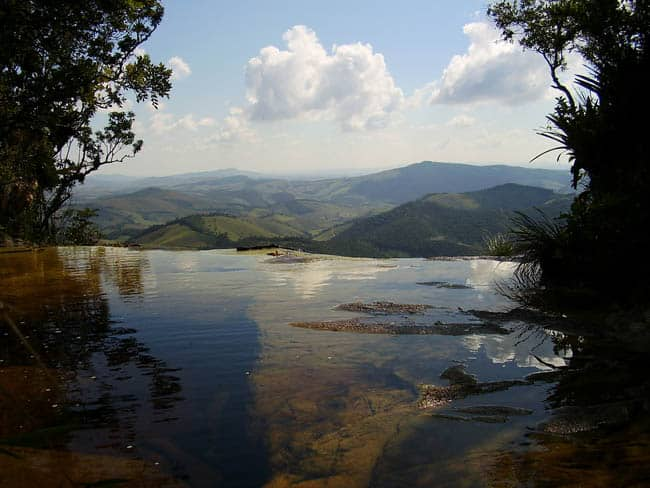
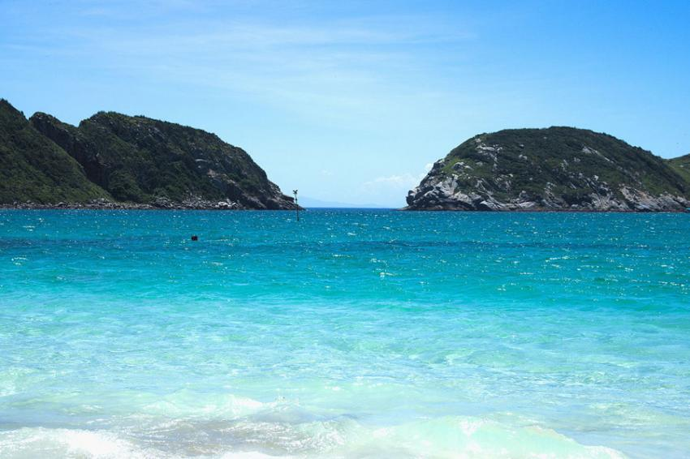
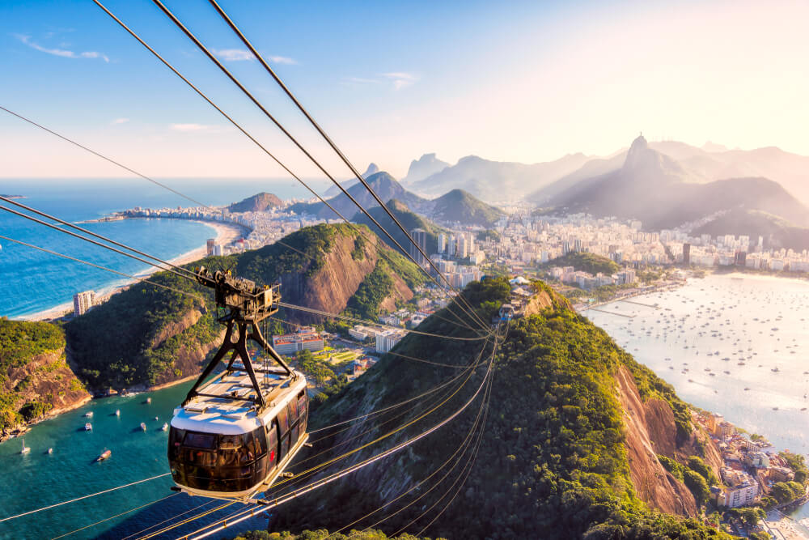
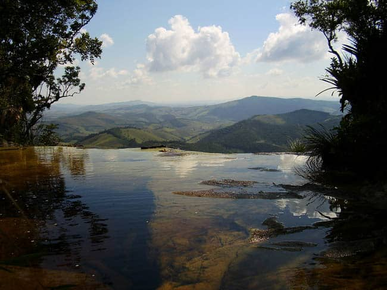
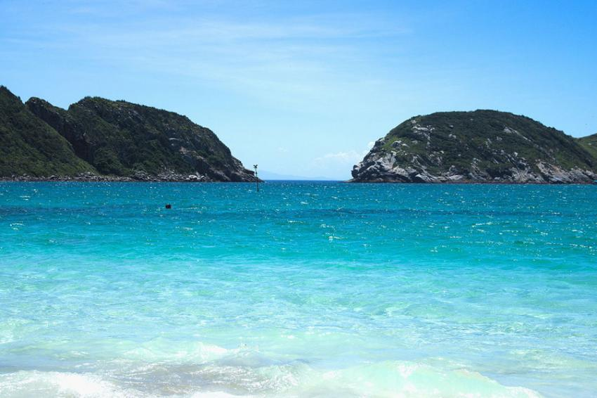
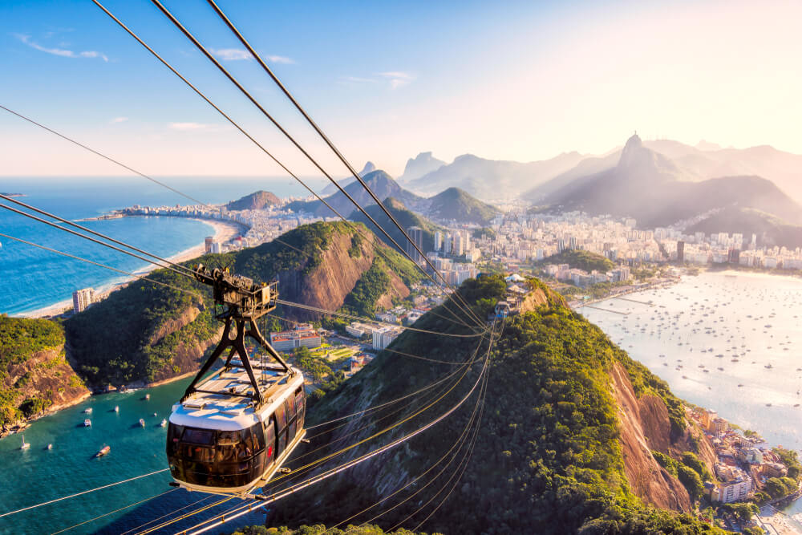
Destinos para visitar na região Sul:


 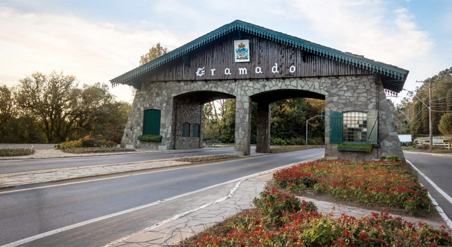
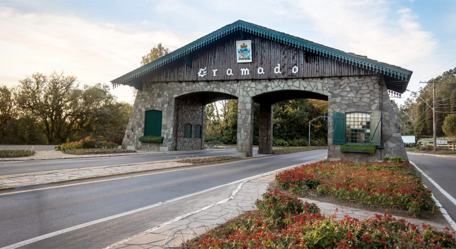
Destinos para visitar na região Centro-Oeste:
 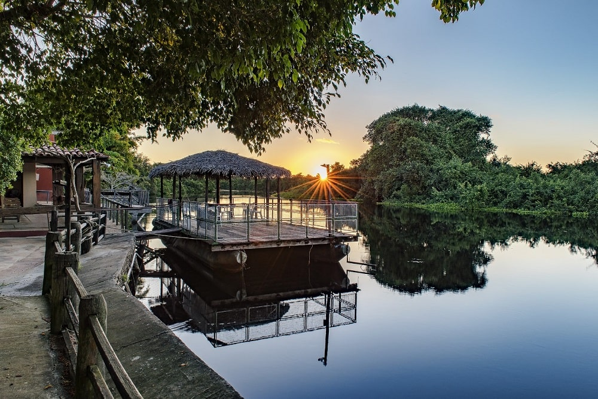
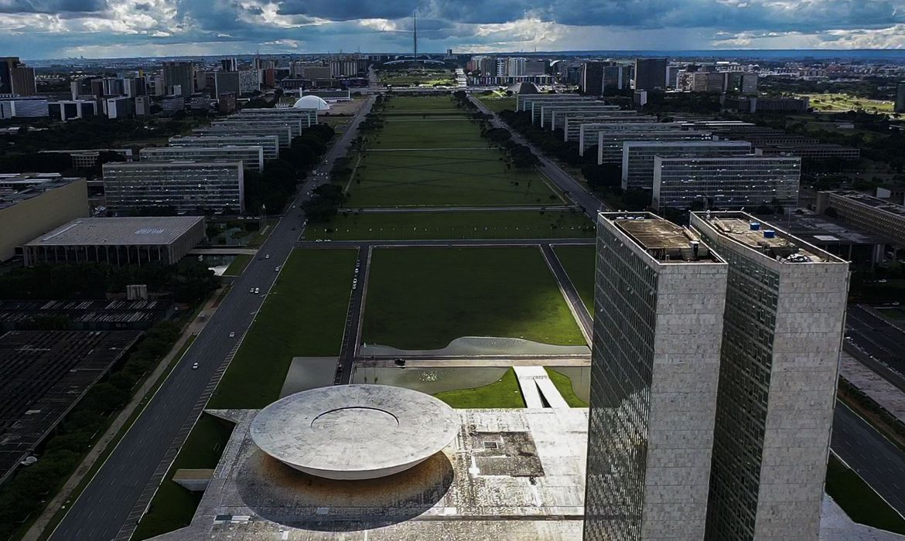
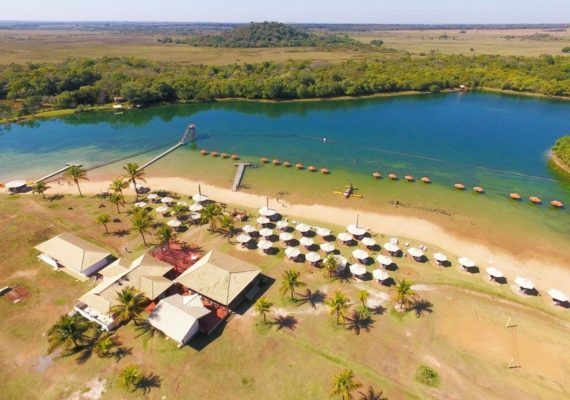
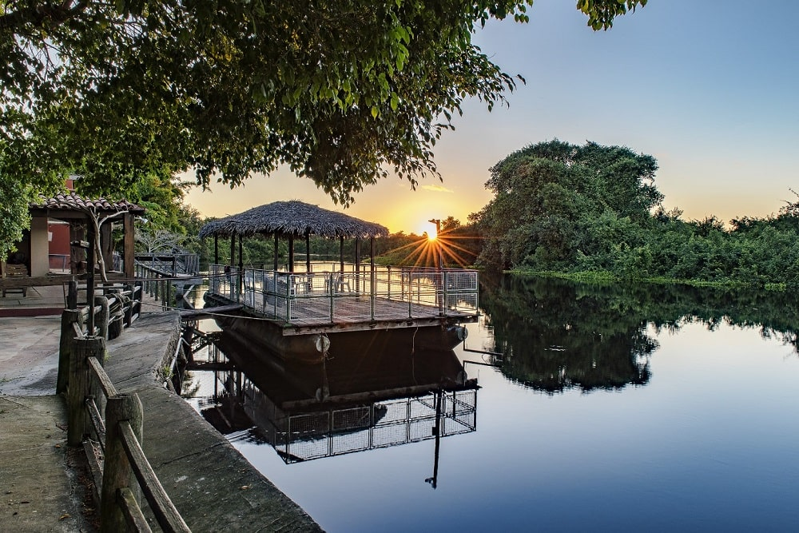
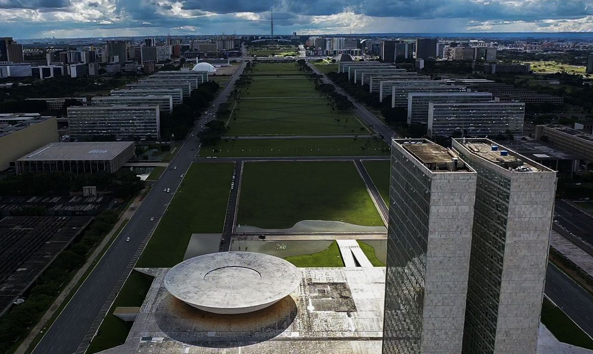
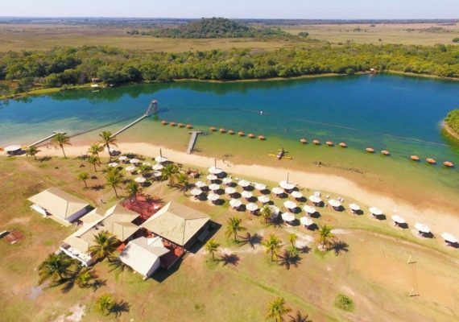